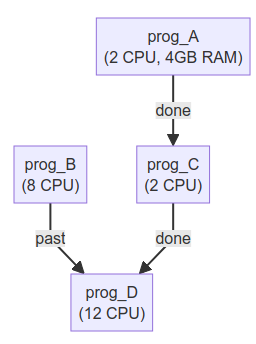

Use Cases
JobSchedulers.jl can used to glue commands in a pipeline/workflow, and can also be used in pure Julia functions.
The overhead of scheduling tasks is very low, and can be used to replace Threads.@threads for ... end. Scheduling 100,000 jobs can be done within 0.2 seconds. See more at section "Overhead Benchmark".
Parallel Nested Loops
One of the many applications of scheduling systems is that it can be used as a drop-in replacement for nested multi-threaded loops that would otherwise be written with Threads.@threads.
Consider a simplified scenario where you want to calculate the maximum mean values of random samples of various lengths that have been generated by several distributions provided by the Distributions.jl package. The results should be collected into a DataFrame. We have the following function:
# julia -t 8,1
using Random, Distributions, StatsBase, DataFrames
function f(dist, len, reps, σ)
v = Vector{Float64}(undef, len) # avoiding allocations
maximum(mean(rand!(dist, v)) for _ in 1:reps)/σ
endLet us consider the following probability distributions for numerical experiments, all of which have expected values equal to zero, and the following lengths of vectors:
dists = [Cosine, Epanechnikov, Laplace, Logistic, Normal, NormalCanon, PGeneralizedGaussian, SkewNormal, SkewedExponentialPower, SymTriangularDist]
lens = [10, 20, 50, 100, 200, 500]Using Threads.@threads those experiments could be parallelized as:
using Base.Threads
function experiments_threads(dists, lens, K=1000)
res = DataFrame()
lck = ReentrantLock()
Threads.@threads for T in dists
dist = T()
σ = std(dist)
for L in lens
z = f(dist, L, K, σ)
Threads.lock(lck) do
push!(res, (;T, σ, L, z))
end
end
end
res
end
experiments_threads(dists, lens, 1000)
@time experiments_threads(dists, lens, 10000);
# 7.096723 seconds (817 allocations: 107.594 KiB)
# 7.116899 seconds (817 allocations: 107.594 KiB, 1 lock conflict)
# 7.117008 seconds (817 allocations: 107.594 KiB)Note that DataFrames.push! is not a thread safe operation and hence we need to utilize a locking mechanism in order to avoid two threads appending the DataFrame at the same time.
The same code could be rewritten in JobSchedulers as:
using JobSchedulers
function experiments_jobschedulers(dists, lens, K=1000)
res = DataFrame()
for T in dists
dist = T()
σ = @submit std(dist)
for L in lens
z = @submit f(dist, L, K, result(σ))
push!(res, (;T, σ, L, z))
end
end
res.z = fetch.(res.z)
res.σ = fetch.(res.σ)
res
end
experiments_jobschedulers(dists, lens, 1000)
@time experiments_jobschedulers(dists, lens, 10000);
# 3.834554 seconds (6.24 k allocations: 281.156 KiB)
# 3.771652 seconds (6.30 k allocations: 281.750 KiB, 2 lock conflicts)
# 3.746664 seconds (6.30 k allocations: 282.031 KiB)In this code we have job interdependence. Firstly, we are calculating the standard deviation σ, and then we are using that value in the function f. Here, submit! wraps a task or a 0-argument function. Since submit! yields a Job rather than actual values, we need to use the result function to obtain those values. Because computing z requires completion of σ, we need to add argument dependency=σ to submit!. In the last, after all jobs are submitted, we use fetch to wait for each job to finish and return its value.
Also, note that contrary to the previous example, we do not need to implement locking as we are just pushing the Job results of submit! serially into the DataFrame (which is fast since submit! doesn't block).
The above use case scenario has been tested by running julia -t 8,1 (or with JULIA_NUM_THREADS=8,1 as environment variable), Julia version 1.11.3. The Threads.@threads code takes 7.1 seconds to run, while the JobSchedulers code, runs around 3.8 seconds, resulting in a 1.9x speedup.
Parallel Nested Loops was copied and edited from Dagger.jl's document. Most information are the same, except that JobSchedulers.jl was used.
A Workflow Example With Pipelines.jl
- Run
prog_Awith 2 threads and 4GB RAM. - Run
prog_Bwith 8 threads. - After
prog_Afinished, runprog_C(2 threads). - After
prog_Bandprog_Cfinished, runprog_D(12 threads)
The flowchart is like:

The Julia code:
using JobSchedulers, Pipelines
prog_A = CmdProgram(...)
prog_B = JuliaProgram(...)
prog_C = CmdProgram(...)
prog_D = JuliaProgram(...)
job_A = submit!(prog_A; A_args..., ncpu = 2, mem = 4GB)
job_B = submit!(prog_B; B_args..., ncpu = 8)
job_C = submit!(prog_C; C_args..., ncpu = 2,
dependency = job_A)
job_D = submit!(prog_D; D_args..., ncpu = 12,
dependency = [PAST => job_B, job_C])
wait_queue()